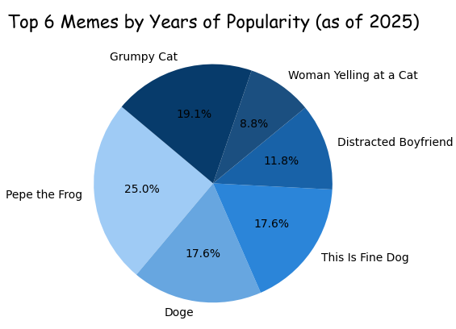
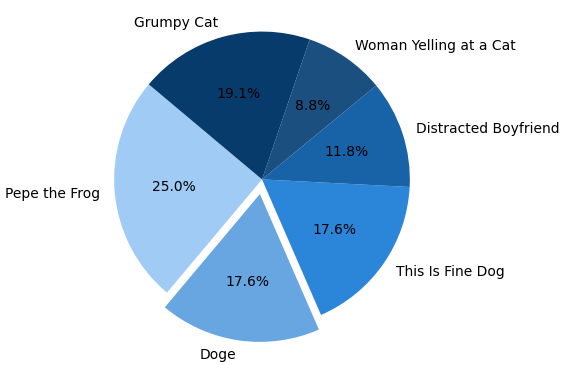
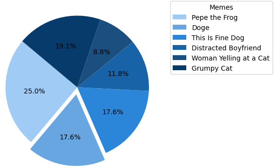
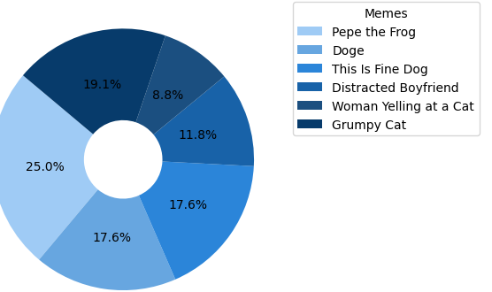

Plot Pie Charts in Python with Matplotlib — A Tasty Guide for Beginners
Ever wondered how to make pie charts in Python that don’t look like your math textbook from 6th grade? Well, you’re in for a treat — because we’re serving some sweet plots with Matplotlib today. Whether you’re a data newbie or just here to make things look cute, this guide’s got you covered. Let’s slice through the code and make your data deliciously visual
Why Use Pie Charts?
Because sometimes, you just want to show how the cake is divided . Pie charts make it super easy to visualize proportions — who got the biggest slice, who got none, and everything in between. They're quick, clean, and instantly understandable, especially when dealing with simple categorical data.
What You’ll Learn
- How to plot pie charts with just a few lines of Python
- Customize slices with colors, labels, and explode effects
- When to use pie charts (and when not to)
- Pro tips to make your visuals pop for presentations & projects
- Master
plt.pie()with multiple data slices — one chart, many stories
New to Python? Don't worry — installing Matplotlib is super easy
Just open your terminal and run: pip install matplotlib. That’s all you need to get started!
Step-by-Step Code Example
Here’s a simple example of how to create a pie chart in Matplotlib:
import matplotlib.pyplot as plt
# Meme names
memes = [
"Pepe the Frog",
"Doge",
"This Is Fine Dog",
"Distracted Boyfriend",
"Woman Yelling at a Cat",
"Grumpy Cat"
]
# Years they've been famous (as of 2025)
years_famous = [17, 12, 12, 8, 6, 13]
colors = ['#9fcbf5', '#67a6e0', '#2b85d9', '#1862a8', '#1b4f80', '#073b6b']
plt.pie(years_famous, labels=memes, autopct='%1.1f%%', startangle=140, colors=colors)
plt.title("Top 6 Memes by Years of Popularity (as of 2025)", fontdict={'fontsize': 16, 'fontname': 'Comic Sans MS'})
plt.show()
This pie chart visualizes how long the top 6 legendary internet memes have been famous (as of 2025). Instead of numbers or dry stats, it celebrates meme culture with flair.
Quick Highlights:
-
memes = [...]
🔹We’ve got 6 legendary memes — each one’s a certified icon -
years_famous = [...]
🔹This list stores how many years each meme has ruled the internet (as of 2025). -
colors = [...]
🔹Custom pastel shades to keep things cute and not chaotic. -
plt.pie(...)
🔹This draws the pie. We added labels, % values, custom colors, and a starting angle for flair. -
autopct='%1.1f%%'
🔹Shows percentage with 1 decimal — because details matter -
startangle=140
🔹Rotates the pie for better balance and ✨aesthetic vibes✨ -
plt.title(...)
🔹Adds a fun title in Comic Sans — because memes deserve drama -
plt.show()
🔹Opens up the final pie chart. Boom. Done.
Here's the output :

Not gonna lie, my color palette feels pretty pro.
Brace yourself — cool pie chart stuff incoming
🔹Exploding Slices: Making One Piece Pop
explodes = [0, 0.1, 0, 0, 0, 0]
Sometimes, you want a slice of the pie to stand out — maybe it’s the most important, or you just want it to scream “look at me!” That’s where explode comes in — it pulls out specific slices to grab attention.
🔹Separate Legends, Clearer Vibes
plt.legend(memes, title="Memes", loc="upper left", bbox_to_anchor=(1, 1))
Instead of crowding the pie chart with labels inside the slices (which can get messy), we used plt.legend() to place the labels outside the chart — neat and clear.
memes→ The list of labels.title="Memes"→ Adds a cute title to the legend box.loc="upper left"→ Places the legend near the top-left.bbox_to_anchor=(1, 1)→ Pushes the legend outside the chart so it doesn’t overlap.

🔹Donut Vibes with wedgeprops
plt.pie(data, wedgeprops=dict(width=0.7))
Want to turn your regular pie chart into a donut chart? That’s where wedgeprops comes in!
wedgepropslets you style the pie slices.width=0.7hollows out the center — making it look like a donut.

When to Use Pie Charts (And When You Definitely Shouldn’t)
Pie charts are great, but not for every situation. Let’s break it down:
- 🔹Use pie charts when:
- You’re showing parts of a whole (like budget, votes, or proportions).
- There are fewer categories (ideally less than 6).
- You want a quick, visual idea of “who got the biggest slice.”
- 🔹Avoid pie charts when:
- You have too many categories — it’ll look like a pizza explosion.
- The values are very close — bar charts will show the differences better.
- You’re doing serious analysis — pie charts are for quick vibes, not deep insights.
Looking to level up? Explore more premium learning content through the links below :